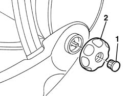

7045A24 squab knob - r r
- Path
- Procedures > 70 FITTINGS > 7045 FRONT SEATS > 7045A front seat assembly > 7045A24 squab knob - r r
- Kind
- repair procedure (removal / refitting; the operation number is the code)
- Applies to
- all engines; all production periods
- Interactive page
- https://sloeber94.github.io/elrnDB-a156/en/#/3238865
Applies to: all engines; all production periods
 Removing
Removing
 Refitting
RefittingPush the seat completely forward.
1. Remove the rod.
2. Remove the back adjustment handle.

Applies to: all engines; all production periods
Refitting
RemovingMake sure that the handle is not damaged.
Reinstall the back adjustment handle.
Install the rod
Control the correct functioning of the back adjustment.
Topics that link to this page (14)
- O02 FRONT SEAT BACKREST ANGLE ADJUSTMENT NOT WORKING
- S65 SEATS CREAKING
- 5580C92 connecting lead in seat for side air bag module r r
- 7045a36 drivers seat manual height adjustment device - r r
- 7045a38 device for driver`s seat squab lumbar adjustment - r r with seat removed
- 7045A39 device for driver`s seat squab lumbar adjustment - r r
- 7045a43 seat exterior guard - r r
- 7045A72 front seat mount/guide - passenger`s side r r with seat removed
- 7045A73 front seat mount/guide - passenger`s side r r
- 7045A80 front seat cushion squab (outer) joint assembly - r r with seat removed
- 7045A82 front seat cushion/squab (interior) joint assembly - r r with seat removed
- 7045A85 Front seat BACKREST COVER, left or right - R.R.
- 7045A88 Front seat BACKREST UPHOLSTERY, left or right - R.R. with seat removed
- 7045A89 Front seat BACKREST UPHOLSTERY, left or right - R.R .